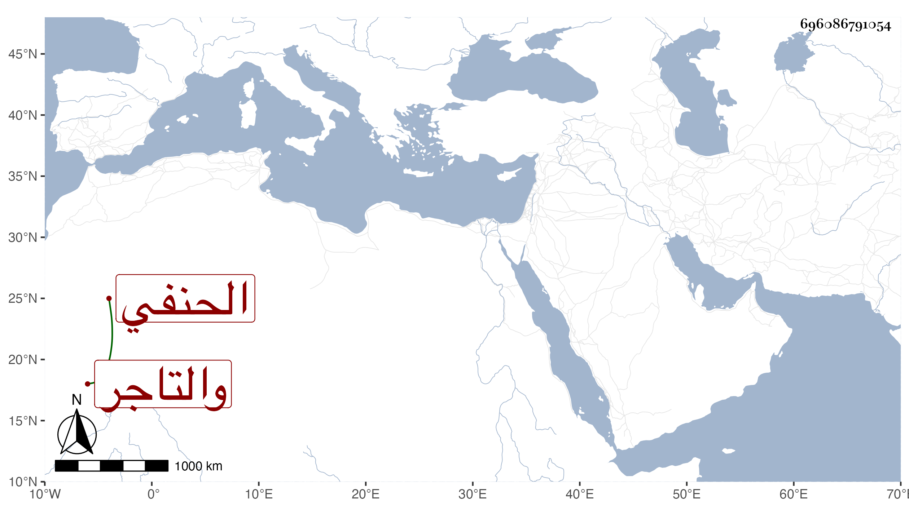

0902Sakhawi.DawLamic.ITO20230111-ara1.EIS1600.696086791054
Biography ID: 696086791054
ابن الجندي الشمس محمد بن أبي بكر بن ايدغدي الحنفي والتاجر ناصر الدين محمد بن عمر بن عثمان وبنوه عبد القادر وهو الكبير ومحمد واسمعيل سمعوا على الزين البوتيجي وله رابع اسمه عمر وصهر ابن الجندي أحمد بن محمد بن علي التاجر الضرير ونقيب زكريا العلاء علي بن محمد بن خضر بن أيوب الحنفي .
